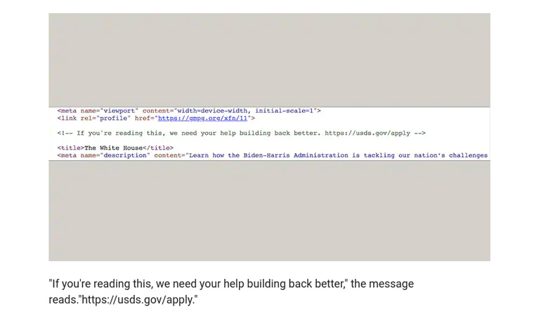

Drones May Have Attacked Humans Fully Autonomously for the First Time
A recent report by the United Nations Security Council's Panel of Experts reveals that an incident in Libya last year may have marked the first time military drones autonomously attacked humans[...]